Theory
|
Additional details on the theory of reverse osmosisand the derivation of equations required to design, size and operate reverseosmosis systems are presented in this section. This section is useful for those interested in gaining a morein-depth understanding of the equations used in the RO simulation module andwhat parameters can be adjusted in the “advanced tools” module. As previously
mentioned, thedifferential osmotic pressure (Dp) across a
membrane separating a puresolvent
from a solution can be estimated by Van’t Hoffs equation: |
|
|

(2)
|
Δπ
osmotic pressure [Pa] Ci concentration of
dissolved species i[mol/L] R universal
gas constant [8.314 m3Pa/mol K] T temperature
[K] |
|
Note
that thefactor of 1000 is necessary for unit conversion. It is
important to recognize that many compounds dissociate intoions, thereby resulting in a
solution with a higher osmotic pressure than formolecules that do not
dissociate. The Ciused in equation 2 is total
concentration of all dissolved species - both ionsand molecules. The flux equations for water and solute arereprinted below: |
|
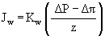 |
(4)
|
|

(5)
|
Both equations include generalized permeationcoefficients, Kw and Ks. These coefficients depend on several parameters, including diffusivity,temperature and membrane characteristics. The derivation of each coefficient is described below.
Thesolute permeation coefficient is the product of the solute
partitioncoefficient and diffusion coefficient described in Table 6
(Seader &Henley, 2006): |
|
|

(6)
|
The
water permeationcoefficient, Kw, is directly proportional to
an average masstransfer coefficient, km, and the molecular weight of
water andinversely proportional to the fluid temperature: |
|
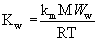 |
(7)
|
The average mass transfercoefficient is the sum of the water
diffusivity through the membrane, Dw,due to salvation and
capillary transfer: |
|
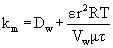 |
(8)
|
The second term in
Equation (8) is themass transfer due to capillary action. It
depends on membrane characteristics, including porosity (e), pore size (r), tortuousity (t), the molar volume of water (Vw),and
viscosity (m). Typical values
for these parameters arepresented in Table 6. |
Table 6. Typical RO FluxParameters
|
|
||
|
Diffusivity |
Dw |
10-8 m2/s |
|
Membrane
thickness |
z |
2x10-7m |
|
Pore size |
r |
5x10-9m |
|
Tortuousity |
t |
10 m3 void/m3 filter |
|
Porosity |
e |
0.9 |
|
Molecular weight |
MWw |
18.00 g/mol |
|
Gas constant |
R |
8.314 Pa-m3/mol-K |
|
Water viscosity |
m |
0.001 kg/m-s |
|
Molar volume
water |
Vw |
1.8x10-5m3/mol |
|
Solute partition
coefficient |
|
100 |
|
Solute diffusion
coefficient |
D21 |
5x10-10
m2/s |
|
The osmotic
pressure term, Dp, in Equations (2) and (4) and theconcentration
gradient in Equation (5) are not based on the soluteconcentration in
the bulk fluids, but on the solute concentrations in thepermeate, Cp, and
at the membrane Cm. Both terms
are dependent on the rejectionratio, Rej, of the solutes present. Recall that solute transport through the
membrane is diffusiondependent; thus, it depends on the solute
concentrations at the membrane. Accurate
solutions of the soluteconcentrations and rejection ratio require
iterative solutions. Several models
utilizing finite differencesolutions are solved using concentration
values from the preceding time step tosolve for the reject ratio of the
current time step which is then used toupdate the concentrations as
shown below: |
|
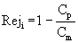 |
(9)
|
where Cp
and Cmare the permeate and membrane solute concentrations,
respectively. The membrane concentration
can be calculatedfrom (Haas, et al., 1995): |
|
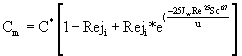 |
(10)
|
where
C*
Bulkconcentration [mol/L] Jw Mass flux of water (equation 4) Re Reynolds
Number Sc Schmidt
Number (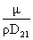) u Water
velocity across membrane (m/s) |
| Similarly, the permeate
concentrationcan be found from: |
|
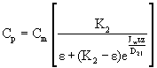 |
(11)
|
where K2 Solutepartition coefficiente Membrane porosityJw Mass flux of water t Membrane tortuousity z Membrane thickness
D21
Solute diffusion coefficient in water |
|
Typicalvalues for these variables are presented in Table 6, above.
Thetotal fluxes, Wsalt and Wwater,
are obtained bymultiplying the salt and water fluxes, Js and
Jw,estimated from equations 4 and 5 by the membrane surface
area, A: |
|
Wsalt = A * Js |
(12)
|
Wwater = A * Jw |
(13)
|
where
Wsalt
Total salt flux through the membrane [mol /s] Wwater Total water flux through the membrane
[kg /s] A Surface
area of the membrane [m2] |
Simplified Model
The rigorous approachto calculating the osmotic pressure described above requires predictions of thesolute concentration at the membrane surface (Cm). This requirement necessitates an iterativesolution technique. A simpler approachto solving the flux calculations is made by assuming that the concentratedsolution is well mixed. In thisapproach, the osmotic pressure calculated in Equation (2) is based on the bulksolute concentration in the feed stream (Cf) and permeate stream (Cp),respectively. This approachunderpredicts the osmotic pressure, resulting in higher water fluxcalculations. Errors are minimized forRO systems with extremely high cross-flow velocities in the retentate stream(see Figure 2) that would reduce the formation of the concentration boundarylayer.
Using the bulk-fluidconcentration approach, the
osmotic pressure, water and salt fluxes arecalculated using Equations
(2), (4) and (5) above based on the bulk feedconcentration, Cf.
These fluxes are then used to determine the watermass flow rate using
Equation (12). Thevolumetric flow rate can
be found by dividing the mass flow rate by thedensity:
Permeate flow rate is simplycalculated from the total
water flux by dividing by the water density: |
|
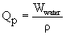 |
(14)
|
where Qp Volumetric flow rate of permeate [m3/s]
r
Water density [kg / m3] |
|
Theconcentration of the
permeate stream (mol/L) can then be calculated by dividingthe molar
salt flow rate calculated by Equation (13) by the water flow rate: |
|
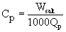 |
(15)
|
where the 1000 found in the denominatorof Equation (15) is required to convert cubic meters to liters.
Toestimate the salt concentration in the
permeate stream, the flux, concentrationand flow equations must be
combined. Using Equations 4, 5, 12, 13, and 14,equation (15) can be
rearranged to obtain the following expression: |
|
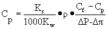 |
(16)
|
Letting 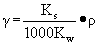, the expression is
simplified to: |
|
|

(17)
|
Substitution of
Equation (2) for Δπ,yields: |
|
|

(18)
|
Rearrangement of
Equation (18) reveals aquadratic equation in the following form: |
|
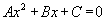 |
(19)
|
with: A = 1, B = [
DP – 1000Cf*RT + γ
]/1000RT, C= – γ*Cf/1000RT.
Solution ofthe quadratic gives: |
|
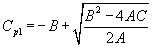 |
(20)
|
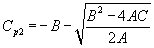 |
(21)
|
The retentate
concentration and flowrate are calculated by applying mass and mole
balances to the system, assumingthat the fluid adjacent to both sides
of the membrane is well mixed. |
|
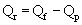 |
(22)
|
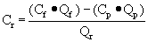 |
(23)
|
where Qr
Retentate flow rate [m3/s] Qf Feed
flow rate [m3/s] Qp Permeate
flow rate [m3/s] Cr Retentate
concentration [mol/L] Cf Feed
concentration [mol/L] Cp Permeate
concentration [mol/L] |
PermeabilityModel
A third solution approach is basedon membrane permeability. Given thewater permeability constant, a, thewater flux through the membrane can be found from: |
|
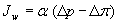 |
(24)
|
Factors that determine the waterflux, often referred to as water recovery which is the amount of treated waterproduced by the RO unit, include the required water quality and the percentsaturation of materials retained by the membrane. These materials are typically referred to as critical membranefoulants. When describing the nominalcapacity for a RO system, the quantity of source water required to produce agiven amount of treated water is used. The percent recovery, or the amount of treated water produced per unitof feed water, can be calculated from: |
|
|
(25)